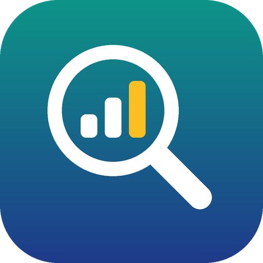

Jourify Keyword Insights
Keyword research for the Jourify print-on-demand store, powered by our own Google Ads account.
Jourify is an independent print-on-demand store selling original t-shirt and digital designs. Jourify Keyword Insights is the small internal tool we use to decide which designs to make and how to describe them, based on what people actually search for.
What it does
- Keyword ideas: suggests related search terms for a design idea, such as "funny cat shirt".
- Search volume: shows average monthly searches and competition for a list of keywords.
- Forecasts: estimates clicks and cost for keywords at a given bid, to plan small ad tests.
- Locations: looks up countries, regions and cities to narrow research to a market.
How it uses Google data
The tool signs in with Google OAuth and asks for one permission: access to Google Ads (https://www.googleapis.com/auth/adwords). It uses that access only to call the Google Ads API Keyword Planning services for Jourify's own Google Ads account.
- It runs only on the store owner's own computer. It is not offered to other users or businesses.
- It reads keyword planning data. It does not create, edit or pause campaigns, ads or budgets.
- No Google user data is sold, shared with third parties, or used for advertising.
Full details are in our Privacy Policy.
Contact
Questions about this app: boulanouar287@gmail.com